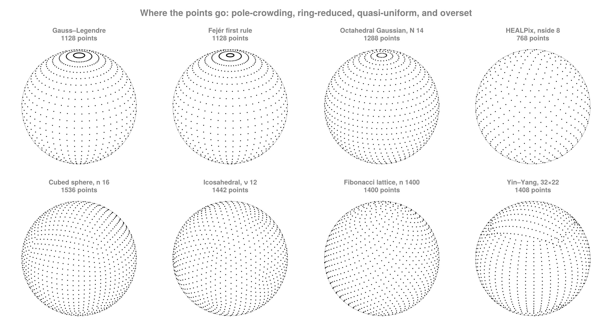

FlowGeometries.jl
Coordinate metrics, spherical samplings, and grid types for flow-field analysis on the plane and the sphere.
The package depends only on ComputationalBackends, whose tags name how a bulk loop runs. Everything optional — spatial search, tessellation, sparse output, static vectors, FFT-based quadrature, device transfer, device kernels, multi-process execution — arrives through package extensions, so you pay for exactly what you load.
Three orthogonal choices

The central idea is that three questions people usually conflate are kept separate:
| question | answered by | examples |
|---|---|---|
| What is the metric? | Geometry | CartesianGeometry, SphericalGeometry |
| Where are the points? | SphericalSampling | Gauss–Legendre, HEALPix, cubed sphere, icosahedral, Yin–Yang |
| How is the data stored and connected? | Grids, Connectivity | structured, curvilinear, unstructured |
A Gauss–Legendre sampling can live in a structured grid under a spherical geometry; so can a lat–lon sampling. Changing one does not force a change in the others.
Installation
using Pkg
Pkg.add(url = "https://github.com/jbphyswx/FlowGeometries.jl")Quick start
The package exports nothing. Import it qualified:
using FlowGeometries: FlowGeometries as FGA spherical grid from a spectral sampling:
geo = FG.Geometry.SphericalGeometry() # unit-agnostic; default Earth radius
grid = FG.Connectivity.structured_grid(FG.SphericalSampling.GaussLegendreSampling(), 64) # 127 × 64 lon/lat
FG.Grids.coords(grid, 3, 5) # (λ = …, φ = …), named by the geometry
FG.Grids.measure(grid, 3, 5) # that cell's area2.2427051795065556e10The cells tile the sphere: their measures sum to 4πR².
Nodes and quadrature weights together, from a single solve:
q = FG.SphericalSampling.spherical_quadrature(FG.SphericalSampling.GaussLegendreSampling(), 1024)
q.λ, q.φ, q.w # longitudes, latitudes, latitude weights summing to 2([0.0, 0.003069460335700824, 0.006138920671401648, 0.009208381007102471, 0.012277841342803296, 0.01534730167850412, 0.018416762014204942, 0.021486222349905767, 0.02455568268560659, 0.027625143021307415 … 6.252490703822578, 6.255560164158279, 6.25862962449398, 6.261699084829681, 6.264768545165381, 6.2678380055010825, 6.270907465836784, 6.273976926172484, 6.277046386508185, 6.280115846843886], [-1.5684490105799334, -1.5654082566229572, -1.5623495453704195, -1.559286776798885, -1.5562224691904485, -1.5531574168383155, -1.5500919482806914, -1.5470262237553873, -1.5439603306596488, -1.5408943206921755 … 1.5408943206921755, 1.5439603306596488, 1.5470262237553873, 1.5500919482806914, 1.5531574168383155, 1.5562224691904485, 1.559286776798885, 1.5623495453704195, 1.5654082566229572, 1.5684490105799334], [7.070076410182587e-6, 1.6457727579896862e-5, 2.585912467646185e-5, 3.5261485987198686e-5, 4.4663758128575335e-5, 5.406568289394e-5, 6.346712685980442e-5, 7.286798631902746e-5, 8.226816671645727e-5, 9.166757686136689e-5 … 9.166757686136689e-5, 8.226816671645727e-5, 7.286798631902746e-5, 6.346712685980442e-5, 5.406568289394e-5, 4.4663758128575335e-5, 3.5261485987198686e-5, 2.585912467646185e-5, 1.6457727579896862e-5, 7.070076410182587e-6])An unstructured grid on a quasi-uniform sampling, with exact dual-cell areas:
g = FG.Connectivity.unstructured_grid(FG.SphericalSampling.IcosahedralSampling(16)) # 2562 nodes
FG.Grids.neighbors(g, 1) # this node's neighboursFlowGeometries.Connectivity.MeshNeighbors{FlowGeometries.Grids.UnstructuredGrid{Float64, FlowGeometries.Geometry.SphericalGeometry{Float64}, 2, Tuple{Vector{Float64}, Vector{Float64}}, Vector{Float64}, FlowGeometries.Grids.AllActive{1}, Tuple{FlowGeometries.Grids.Periodic, FlowGeometries.Grids.Bounded}, Vector{Int32}, Vector{Int64}, Nothing}}(UnstructuredGrid{Float64}(2562), 1, true)Neighbours on a structured grid, without materializing anything:
out = Vector{Int}(undef, 8)
n = FG.Connectivity.neighbors!(out, grid, 3, 5; stencil = FG.Stencils.Moore(1)) # writes n indices8Conventions
- Nothing is exported, and nothing is rebound at the top level. Every name is reached through the submodule that defines it:
FG.Axes,FG.Geometry,FG.Stencils,FG.Discretization,FG.SphericalSampling,FG.Grids,FG.Connectivity,FG.Operators,FG.Execution,FG.Decomposition. - Coordinates are named by the geometry. A spherical grid has
grid.λ,grid.φ; a Cartesian one hasgrid.x,grid.y. Asking for the other geometry's names raises. - Spherical coordinates are the polar frame
(λ, φ, r): longitude, geographic latitude, radius. - Cells are cell-centred. A sampling's points are cell centres, and the connectivity treats each point as one cell. The two never disagree.
f!means it writes into your buffers and allocates nothing beyond its return value — asserted in the test suite for every such form, at more than one problem size.- Nonstandard element types work.
Float32andBigFloatare supported throughout; algorithms that cannot reach a given precision defer to ones that can.
Contents
- Geometry
- Axes
- Spherical Sampling
- Grids
- Stencils & Connectivity
- Discretization
- Centres and faces
- Gaps and cell widths
- Point location
- Interpolation weights
- Finite-difference weights
- Applying a weight set
- The physical derivative
- Staggered operators
- Strain rate, vorticity and divergence
- Off a rectilinear grid: the least-squares gradient
- Evaluating a field at a coordinate
- A batch of fields on one grid
- Metric factors
- Extensions
- Performance
- API Reference